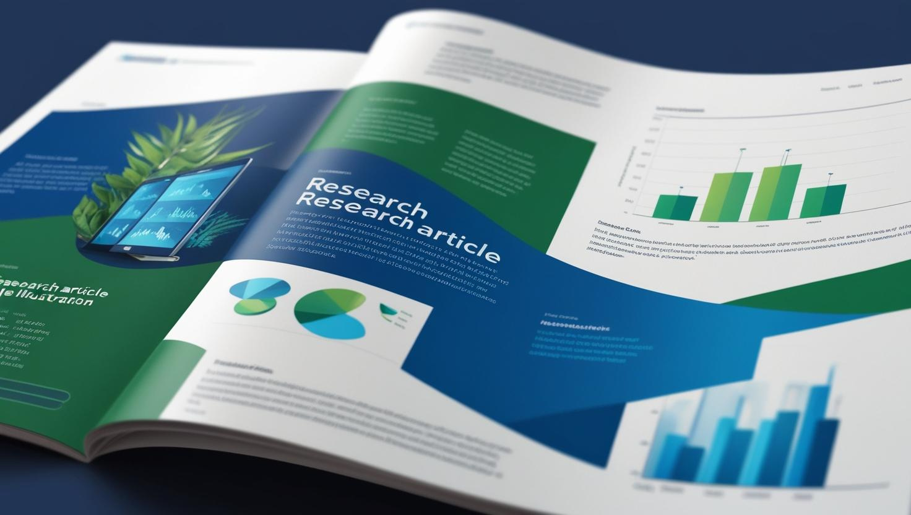

Recherche · Chaire CARA
Projets de recherche
Cette section regroupe des projets de recherche en cours auxquels participent des étudiantes et des étudiants. Les travaux présentés peuvent être à différentes étapes de développement et ne correspondent pas nécessairement à des publications finalisées.
Projets en cours
This paper extends a previously developed actuarial fire-spreading framework—initially limited to small tree structures—to buildings composed of an arbitrary number of interconnected units. Fire propagation is modeled using a probabilistic tree-based structure, where damage spreads recursively across connected nodes according to edge-specific propagation probabilities and node-level characteristics. The proposed approach derives the full distribution of aggregate fire losses using probability generating functions combined with Fast Fourier Transform techniques, allowing for exact and scalable computation without reliance on simulation. The framework further incorporates heterogeneous loss distributions, ignition probabilities, and flashover effects across units, providing a more realistic representation of building risk. Numerical experiments highlight the critical role of network topology, showing that highly connected (hub-like) structures generate larger and more variable losses than linear configurations, while sensitivity analyses identify structurally critical connections driving systemic risk.
This paper extends an actuarial fire-spreading model (AFSM) to the assessment of fire risk in farm environments by integrating contagion-based propagation mechanisms derived from distance-dependent models. Farms are represented as spatially connected structures whose configuration and ignition location determine fire spread dynamics. By embedding these mechanisms into a tree-based analytical framework and conditioning on the origin of the fire, the approach enables the exact computation of aggregate loss distributions, risk measures, and insurance premiums without reliance on simulation. Beyond applying the model to farms, the paper also investigates what minimal structural information a farmer must provide about the site—such as the number, arrangement, and relative distances of buildings—to allow a pricing model to remain as accurate and fair as possible. A numerical application highlights the impact of structural configurations on loss variability and tail risk, and shows how the proposed framework complements and generalizes existing contagion models in insurance applications.
This project studies the stability of loss reserve estimates under controlled perturbations of incremental payments within development triangles. Starting from baseline reserves obtained via Chain Ladder and bootstrap methods, the approach introduces a formal stability criterion defined by the perturbation magnitude, the number of impacted cells, and a confidence level, whereby a reserve is considered stable if deviations at the chosen quantile remain within the initial margin of safety. Using both classical and robust Poisson GLMs, the analysis quantifies how reserve sensitivity evolves as perturbations increase in magnitude and scope, highlighting differences in robustness between modeling approaches. The broader objective of the project is to generalize this stability framework to individual reserving models, moving beyond aggregate triangle-based methods toward micro-level reserving structures.
Telematics data provide unprecedented granularity for studying driving behavior, yet raw data often suffer from fragmented trip records that can bias subsequent analyses. This study proposes a novel trip consolidation method based on time gaps, similarity metrics, and Mahalanobis anomaly scores, with a threshold selection approach guided by anomaly distribution shifts. Using a large-scale telematics dataset—substantially larger and more diverse than those used in prior work (e.g., Bolancé et al., 2024)—we build upon a recent Difference-in-Differences (DiD) framework by (i) incorporating additional covariates derived from policyholder and vehicle characteristics (e.g., payment plan, vehicle use, marital status, etc.), (ii) introducing new outcomes (number of trips, anomaly score changes, idle ratio, etc.) to assess the multifaceted effects of accidents on driving behavior, and (iii) relaxing the original sample restriction to include drivers with post-treatment claims, enabling a direct comparison of treatment effects under alternative assumptions.